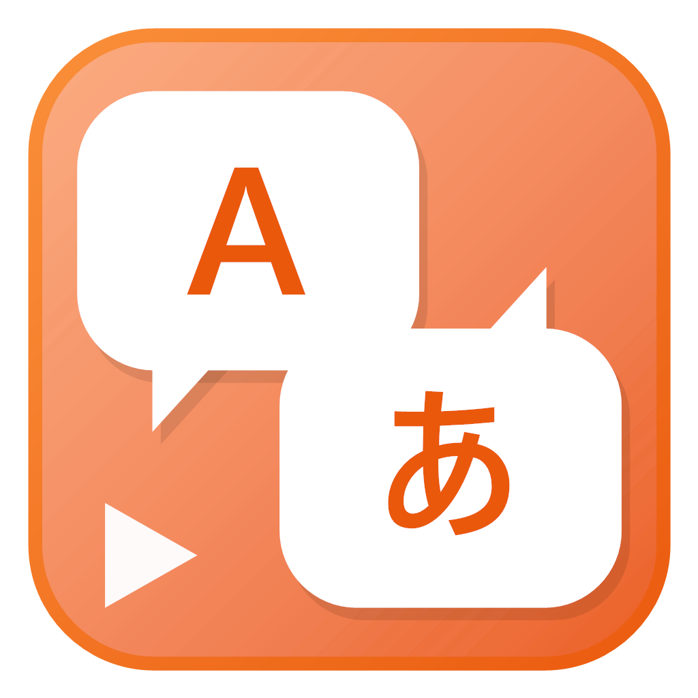
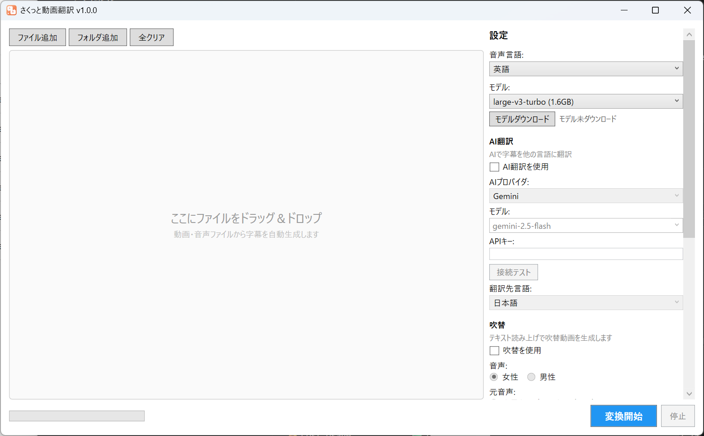
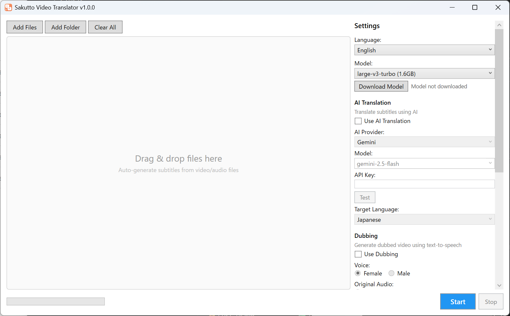

文字起こし → AI翻訳 → 字幕焼き付け／AI吹き替え
動画の多言語対応を、これ1本で。
Transcribe → Translate → Burn-in Subtitles or AI Dub
Everything you need to localize a video, in one app.
30秒の英語プロモを、さくっと動画翻訳で日本語化したデモです。 A 30-second look at what Snap Video Translator does.
前半（0:00〜0:30）は英語ナレーション付きの原版プロモ動画。
後半（0:33〜1:04）は同じ動画を「さくっと動画翻訳」で日本語化したものです — AI吹替で音声を差し替え、翻訳字幕を動画に焼き付けています。
「翻訳前」と「翻訳後」を1本でご覧いただけます。
A 30-second product video showing the core flow — drop a video, transcribe the speech, translate with AI, and choose burn-in subtitles or AI dubbing in 7 languages.
文字起こしから吹き替えまで、このアプリひとつで完結します。From transcription to dubbing — one app covers it all.
OpenAI Whisper をお使いのPC上で実行。音声をクラウドに送らずに字幕の元データを作成します。Runs OpenAI Whisper on your own PC. Builds the subtitle source without sending audio to the cloud.
Gemini・OpenAI・Claude などのAIサービス、またはOpenAI互換のローカルLLMで翻訳できます。Translate with AI services like Gemini, OpenAI, and Claude, or an OpenAI-compatible local LLM.
フォントサイズ・文字色・縁取り・表示位置を調整して、字幕を動画に直接焼き込みます。Adjust font size, color, outline, and position, then burn subtitles directly into the video.
翻訳した内容を音声化し、吹き替え動画を生成。元音声とのミックス／置き換えを選べます。Turns the translation into speech and generates a dubbed video. Mix with or replace the original audio.
動画を入れて設定するだけのシンプルな画面。A simple screen — just add a video and configure.


メイン画面 — 文字起こし・AI翻訳・吹き替えの設定をまとめて行えます。Main window — transcription, AI translation, and dubbing settings all in one place.
動画の多言語対応を、もっとシンプルに。Localizing video, made simpler.
インストールしたらすぐ起動。アカウント登録は不要です。Launch right after install. No account signup required.
日本語・英語・中国語・韓国語・フランス語・ドイツ語・スペイン語に対応。Japanese, English, Chinese, Korean, French, German, and Spanish.
OSの言語設定に合わせて自動で切り替わります。Switches automatically based on your OS language.
文字起こしはPC上のWhisperで動作し、音声は外部に送信されません。Transcription runs locally with Whisper — your audio is not sent anywhere.
月額課金なし。一度購入すればずっと使えます。No subscription. Buy once, use forever.
Gemini・OpenAI・Claude、またはローカルLLMから選択できます。Pick Gemini, OpenAI, Claude, or a local LLM.
動画の翻訳がこんなにラクになります。Translating a video has never been this easy.
動画・音声ファイルをドラッグ&ドロップ、またはボタンで選択。Drag & drop video/audio files, or select them with the button.
文字起こしモデル・AI翻訳・吹き替えのオプションを選びます。Choose the transcription model, AI translation, and dubbing options.
ボタンをクリックするだけ。字幕付き動画や吹き替え動画が出力されます。Just click the button. Out comes your subtitled or dubbed video.
お困りの際はお気軽にお問い合わせください。Feel free to contact us if you need help.
不具合の報告・機能のリクエストBug Reports & Feature Requests
GitHub Issues からご報告いただけます。
Report via GitHub Issues.
お問い合わせContact
Email: support@mojosoft.biz